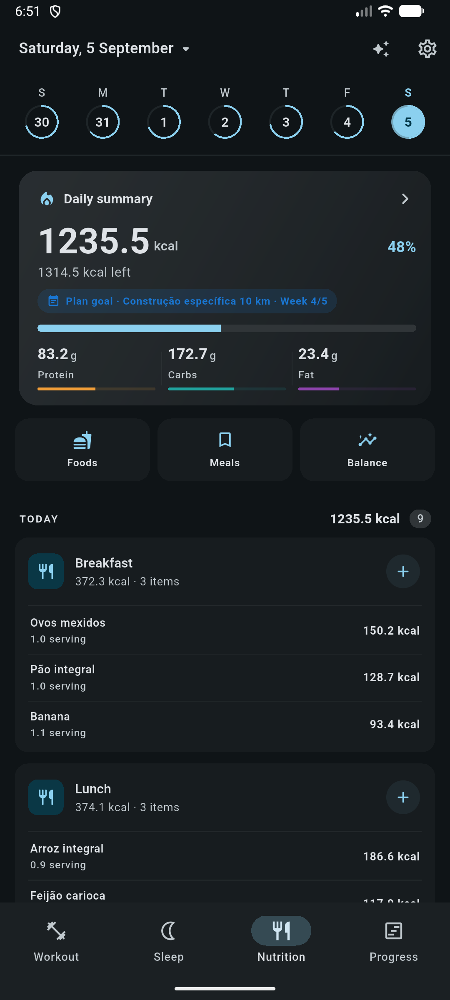
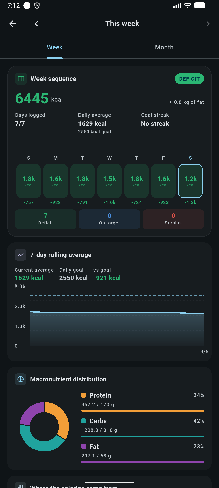

Everything you train,
in one journal you own.
Strength sessions, GPS runs, sleep, food, body measurements and a periodized plan, logged in a single app that keeps its database on your device and works with the network off.



Six connected areas, one database
Every domain reads the same local data, so your body weight feeds calorie estimates, your runs count toward goals, and a periodization week can drive both your routine and your macros.
Strength training
Log sets with weight, reps, RPE, warm-up flags and notes. Rest timer, drag-to-reorder, auto-filled sets from your last session and PR detection on finish.
Read the guideRunning & cycling
GPS recording in a foreground service that survives a closed app, per-kilometre splits, elevation, best-effort times and route replay. Stationary bike sessions need no GPS.
Read the guideRunning plans
Build a plan from a template catalog covering 5K to marathon, base building, threshold and hill blocks, with paces derived from a VDOT model and step-by-step voice coaching.
Read the guideSleep & alarms
Log nights by hand or let the Android monitor estimate sleep stages from on-device audio aggregates. Alarms keep ringing with the app closed, with an optional barcode wake-up mission.
Read the guideNutrition
A meal diary with calorie and macro targets, a reusable food library, saved meals, barcode lookup, label photos and micronutrient summaries.
Read the guidePeriodization
Split a training block into phases with versioned nutrition, training, weight, sleep and running targets, then review adherence in a weekly check-in.
Read the guideLogging that keeps up with the set you just finished
Open a routine day or start empty. Each new exercise arrives pre-filled with the weight and reps from the last time you trained it, so most sets are one tap.
- Rest timer starts itself when you tick a set, anchored to wall-clock time so it stays accurate in the background.
- Pause is honest: resuming shifts the start time forward, so paused minutes never inflate your session duration.
- RPE 0–10, warm-up flags and per-set comments in one sheet, with controls that adapt to the exercise type.
- Personal records detected on finish for top weight, session volume and cardio distance.

Runs that survive a locked screen
Recording runs in an Android foreground service, with the durable copy written by the native side and imported into SQLite when you reopen the app. Kill the app mid-run and the session is still there.
- Splits
- Per km + fastest
- Elevation
- Gain / loss
- Efforts
- 1K → marathon
- Live map, splits and interval rows while you run
- Route replay and pace charts after the session
- Stationary bike sessions timed without GPS or a native service

The two habits that decide whether training works
Sleep and nutrition are first-class tabs, not afterthoughts. The sleep monitor labels 30-second epochs as awake, sleeping or deep using only aggregate signals computed on the device. Raw audio is never read by the analysis.
- Sleep dashboard with efficiency, latency, awakenings, 7- and 30-day averages and a regularity score.
- Calorie and macro targets suggested from Mifflin-St Jeor and an activity factor, then adjusted for a cut, maintenance or bulk.
- Barcode and label-photo entry so building the food library stays quick.


Numbers you can trace back to a formula
Charts are built from your own rows, and the maths is written down. Estimated one-rep max uses Epley on the heaviest set of a session; volume is always the sum of weight × reps with warm-ups excluded; body-weight trend is a least-squares slope per week.
| Metric | How it is computed |
|---|---|
| Estimated 1RM | weight × (1 + reps / 30) |
| Volume | Σ weight × reps, is_warmup = 0 |
| Density | volume ÷ session duration |
| Streak | consecutive days with a finished workout |

Bring your own provider. Keep the veto.
Point the app at any OpenAI-compatible endpoint, paste your token and pick a model. The coach answers with your data because it calls read tools against your local database, never from memory or guesswork.
- Read tools run directly: workouts, exercises, records, runs, sleep, nutrition, goals and cross-domain analyses.
- Writes are proposals only: routine changes and new manual foods are reviewed in the app, revalidated, then applied in a transaction.
- Credentials stay in secure storage: never in SQLite, logs, prompts or backups.
- Fully optional: nothing is bundled and no key ships with the app; skip it and the rest works unchanged.
Trim Leg Day from 5 to 4 squat sets and add one back-off set at 80%.
See it before you install it
Captured on an Android device in dark mode. Tap any screen to open it full size; the run screenshots use simulated GPS.
Local by default, portable on demand
There is no backend to trust. The database is a SQLite file on your device, and the only outbound calls are the ones you switch on yourself.
One file, versioned schema
Every domain lives in the same local database with UUID keys and cascading deletes. Schema upgrades are incremental migrations covered by tests.
Backups you can read
Export a JSON backup, share it, or restore it from a file or pasted text. Import validates every collection before it deletes anything, then restores in one transaction.
Deliberate boundaries
Sleep analysis reads aggregates, not audio. A wake-up mission stores a salted hash, not your barcode. AI tokens never leave secure storage.
| Capability | Android | Other targets |
|---|---|---|
| Workouts, exercises, routines, timers, progress | Full | Full |
| Nutrition diary, food library, targets | Full | Full |
| Periodization, goals, body measurements | Full | Full |
| Background GPS run tracking | Full | Not available |
| Sleep monitoring, alarms, wake-up mission | Full | Manual entries only |
| Barcode scanning, native voice coaching | Full | Not available |
Android is the most complete target. Elsewhere the native features report themselves as unsupported instead of failing. See data, backup & privacy.
Read it, build it, change it
Flutter and Material 3 on the front, SQLite repositories underneath, Kotlin foreground services for the Android-only features. State management stays deliberately small: setState for local state, ChangeNotifier for shared services.
- MIT licensed, issues and pull requests welcome
- Analyzer and test suite run in CI before every Android release
- English and Brazilian Portuguese strings live in ARB files
Every feature, written down
The docs walk through each area of the app screen by screen, and spell out the formulas and safety rules behind the numbers.
Start logging tonight
Install the latest Android build, or clone the repository and run it yourself. Either way, nothing leaves your device until you ask it to.
Android APK · MIT license · no telemetry